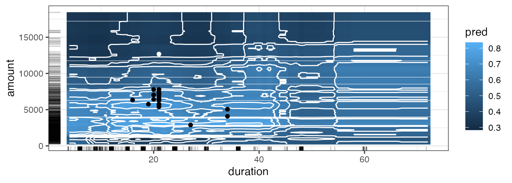

In the following, we explain the counterfactuals
workflow for both a classification and a regression task using concrete
use cases.
library("counterfactuals")
library("iml")
library("randomForest")
library("mlr3")
library("mlr3learners")Classification Task
To illustrate the counterfactuals workflow for
classification tasks, we search for counterfactuals with
MOC (Dandl et al. 2020) for a bank customer, whose credit
application is rejected.
Data: German Credit Dataset
As training data, we use the German Credit Data from the
rchallenge package. The data set contains 1000 observations
with 21 features and the binary target variable
credit_risk. For illustrative purposes, we only consider 8
of the 21 features in the following:
data(german, package = "rchallenge")
credit = german[, c("duration", "amount", "purpose", "age",
"employment_duration", "housing", "number_credits", "credit_risk")]| Variable | Description |
|---|---|
| duration | Credit duration |
| amount | Credit amount (DM) |
| purpose | Purpose of credit |
| age | Age (years) |
| savings | Amount in savings account |
| employment_duration | Years in present employment |
| housing | Type of housing |
| number_credits | Number of credits |
| credit_risk | Class variable (credit worthiness) |
Fitting a model
First, we train a model to predict whether a credit is
good or bad, omitting one observation from the
training data, which is x_interest.
set.seed(20210816)
rf = randomForest::randomForest(credit_risk ~ ., data = credit[-998L,])Setting up an iml::Predictor() object
An iml::Predictor
object serves as a wrapper for different model types. It contains the
model and the data for its analysis.
predictor = iml::Predictor$new(rf, type = "prob")
x_interest = credit[998L, ]
predictor$predict(x_interest)
#> bad good
#> 1 0.618 0.382For x_interest, the model predicts a probability of
being a bad credit risk of 0.38.
Find counterfactuals
Now, we examine which factors need to be changed to incrase the
predicted probability of being a good credit risk to more than
60%.
Since we want to apply MOC to a classification model, we initialize a
MOCClassif object. Individuals whose prediction is farther
away from the desired prediction than epsilon can be
penalized. Here, we set epsilon = 0, penalizing all
individuals whose prediction is outside the desired interval. With the
fixed_features argument, we can fix non-actionable
features, here age and
employment_duration.
moc_classif = MOCClassif$new(
predictor, epsilon = 0, fixed_features = c("age", "employment_duration"),
quiet = TRUE, termination_crit = "genstag", n_generations = 10L
)Then, we use the find_counterfactuals() method to find
counterfactuals for x_interest. As we aim to find
counterfactuals with a predicted probability of being a good credit risk
of at least 60%, we set the desired_class to
"good" and the desired_prob to
c(0.6, 1).
cfactuals = moc_classif$find_counterfactuals(
x_interest, desired_class = "good", desired_prob = c(0.6, 1)
)The counterfactuals object
The resulting Counterfactuals object holds the
counterfactuals in the data field and possesses several
methods for their evaluation and visualization. Printing a
Counterfactuals object, gives an overview of the
results.
print(cfactuals)
#> 53 Counterfactual(s)
#>
#> Desired class: good
#> Desired predicted probability range: [0.6, 1]
#>
#> Head:
#> duration amount purpose age employment_duration housing number_credits
#> <int> <int> <fctr> <int> <fctr> <fctr> <ord>
#> 1: 21 7460 others 30 >= 7 yrs own 1
#> 2: 21 7054 others 30 >= 7 yrs own 1
#> 3: 21 6435 others 30 >= 7 yrs own 1The predict() method returns the predictions for the
counterfactuals.
head(cfactuals$predict(), 3L)
#> bad good
#> 1 0.322 0.678
#> 2 0.318 0.682
#> 3 0.296 0.704The evaluate() method returns the counterfactuals along
with the evaluation measures dist_x_interest,
dist_target, no_changed, and
dist_train.
Setting the show_diff argument to TRUE
displays the counterfactuals as their difference to
x_interest: for a numeric feature, positive values indicate
an increase compared to the feature value in x_interest and
negative values indicate a decrease; for factors, the counterfactual
feature value is displayed if it differs from x_interest.;
NA means “no difference” in both cases.
head(cfactuals$evaluate(show_diff = TRUE,
measures = c("dist_x_interest", "dist_target", "no_changed", "dist_train")), 3L)
#> duration amount purpose age employment_duration housing number_credits dist_x_interest no_changed dist_train dist_target
#> <num> <num> <char> <num> <char> <char> <char> <num> <int> <num> <num>
#> 1: NA -5220 <NA> NA <NA> <NA> <NA> 0.04103193 1 0.04215022 0
#> 2: NA -5626 <NA> NA <NA> <NA> <NA> 0.04422330 1 0.03895885 0
#> 3: NA -6245 <NA> NA <NA> <NA> <NA> 0.04908897 1 0.03409318 0By design, not all counterfactuals generated with MOC have a
prediction equal to the desired prediction. We can use
subset_to_valid() to omit all counterfactuals that do not
achieve the desired prediction. This step can be reverted with
revert_subset_to_valid().
cfactuals$subset_to_valid()
nrow(cfactuals$data)
#> [1] 22The plot_freq_of_feature_changes() method plots the
frequency of feature changes across all remaining counterfactuals.
Setting subset_zero = TRUE removes all unchanged features
from the plot.
cfactuals$plot_freq_of_feature_changes(subset_zero = TRUE)
#> Warning: `label` cannot be a <ggplot2::element_blank> object.The parallel plot connects the (scaled) feature values of each
counterfactual and highlights x_interest in blue. We
specify feature_names to order the features according to
their frequency of changes.
cfactuals$plot_parallel(feature_names = names(
cfactuals$get_freq_of_feature_changes()), digits_min_max = 2L)In the following surface plot, the white dot represents
x_interest. All counterfactuals that differ from
x_interest only in the selected features are displayed as
black dots. The tick marks next to the axes indicate the marginal
distribution of the counterfactuals.
cfactuals$plot_surface(feature_names = c("duration", "amount"))
MOC diagnostics
Additional diagnostic tools for MOC are available as part of the
MOCClassif and MOCRegr class. For example, the hypervolume indicator
(Zitzler and Thiele 1998) given a reference point (that represents the
maximal values of the objectives) could be computed. The evolution of
the hypervolume indicator can be plotted together with the evolution of
mean and minimum objective values using the
plot_statistics() method.
moc_classif$plot_statistics(centered_obj = TRUE)[[1]]
 [[2]]
[[3]]
[[2]]
[[3]]
Ideally, one would like the mean value of each objective to decrease
over the generations, leading to an increase of the hypervolume. We
could visualize the objective values of the emerging candidates
throughout the generations via the plot_search method for
pairs of objectives.
moc_classif$plot_search(objectives = c("dist_train", "dist_target"))
moc_classif$plot_search(objectives = c("dist_x_interest", "dist_train"))
Regression Tasks
Finding counterfactuals for regression models is analogous to
classification models. In this example, we use NICE
(Brughmans et al. (2002)) to search for counterfactuals for plasma .
Brughmans et al. introduced NICE only for the
classification setting but for this package the method was extended to
also work for regression tasks by allowing prediction functions to
return real-valued outcomes instead of classification scores.
Data: Plasma Retinol
As training data, we use the plasma dataset from the
gamlss.data package. The dataset contains 315 observations
with 13 features and the (continuous) target variable
retplasma, the plasma retinol concentration in ng/ml. The
plasma retinol concentration is interesting because low concentrations
are associated with an increased risk for some types of cancer (Harrell
2022).
data(plasma, package = "gamlss.data")| Variable | Description |
|---|---|
| age | Age (years) |
| sex | Sex (1 = male, 2 = female) |
| smokstat | Smoking status (1 = never, 2 = former, 3 = current smoker) |
| bmi | Body mass index (weight/(height^2)) |
| vituse | Vitamin use (1 = yes, fairly often, 2 = yes, not often, 3 = no) |
| calories | Number of calories consumed per day |
| fat | Grams of fat consumed per day |
| fiber | Grams of fiber consumed per day |
| alcohol | Number of alcoholic drinks consumed per week |
| cholesterol | Cholesterol consumed (mg per day) |
| betadiet | Dietary beta-carotene consumed (mcg per day) |
| retdiet | Dietary retinol consumed (mcg per day) |
| betaplasma | Plasma beta-carotene (ng/ml) |
| retplasma | Plasma retinol (ng/ml) |
Fitting a model
First, we train a model to predict plasma_retinol, again
omitting x_interest from the training data. This time we
use a regression tree trained with the mlr3 and
rpart package.
Setting up an iml::Predictor() object
Then, we initialize an iml::Predictor
object.
predictor = iml::Predictor$new(model, data = plasma, y = "retplasma")
x_interest = plasma[100L, ]
predictor$predict(x_interest)
#> .prediction
#> 1 342.9231For x_interest, the model predicts a plasma
concentration of 342.92.
Find counterfactuals
Since we want to apply NICE to a regression model, we
initialize a NICERegr object. For regression models, we
define a correctly predicted datapoint when its prediction is less than
a user-specified value away. Here we allow for a deviation of
margin_correct = 0.5. In this example, we aim for proximal
counterfactuals in additional to sparse ones, such that we set
optimization = "proximity".
nice_regr = NICERegr$new(predictor, optimization = "proximity",
margin_correct = 0.5, return_multiple = FALSE)Then, we use the find_counterfactuals() method to find
counterfactuals for x_interest with a predicted plasma
concentration in the interval [500, Inf).
cfactuals = nice_regr$find_counterfactuals(x_interest,
desired_outcome = c(500, Inf))The counterfactuals object
As a result, we obtain a Counterfactuals object, just
like for the classification task.
cfactuals
#> 1 Counterfactual(s)
#>
#> Desired outcome range: [500, Inf]
#>
#> Head:
#> age sex smokstat bmi vituse calories fat fiber alcohol cholesterol betadiet retdiet betaplasma
#> <int> <fctr> <fctr> <num> <fctr> <num> <num> <num> <num> <num> <int> <int> <int>
#> 1: 46 1 3 35.25969 3 2667.5 131.6 10.1 0 550.5 1210 1291 218To inspect the counterfactual, we can use the same tools as before. For example, in the surface plot, we see that increasing betaplasma helps while changing the age alone has no impact on the prediction.
cfactuals$plot_surface(feature_names = c("betaplasma", "age"), grid_size = 200)User-defined distance function
At the beginning, NICE calculates the distance of
x_interest to each of the training samples. By default,
Gower’s distance measures this but users could also specify their own
distance functions in the distance_function argument. For
example, the Gower distance can be replaces by the L_0 norm.
l0_norm = function(x, y, data) {
res = matrix(NA, nrow = nrow(x), ncol = nrow(y))
for (i in seq_len(nrow(x))) {
for (j in seq_len(nrow(y))) {
res[i, j] = sum(x[i,] != y[j,])
}
}
res
}A short example illustrates the functionality of
l0_norm().
xt = data.frame(a = c(0.5), b = c("a"))
yt = data.frame(a = c(0.5, 3.2, 0.1), b = c("a", "b", "a"))
l0_norm(xt, yt, data = NULL)
#> [,1] [,2] [,3]
#> [1,] 0 2 1Replacing the distance function is fairly easy:
nice_regr = NICERegr$new(predictor, optimization = "proximity",
margin_correct = 0.5, return_multiple = FALSE,
distance_function = l0_norm)
cfactuals = nice_regr$find_counterfactuals(x_interest,
desired_outcome = c(500, 1000))
cfactuals
#> 1 Counterfactual(s)
#>
#> Desired outcome range: [500, 1000]
#>
#> Head:
#> age sex smokstat bmi vituse calories fat fiber alcohol cholesterol betadiet retdiet betaplasma
#> <int> <fctr> <fctr> <num> <fctr> <num> <num> <num> <num> <num> <int> <int> <int>
#> 1: 46 1 3 35.25969 3 2667.5 131.6 10.1 0 550.5 1210 1291 218References
Dandl, S., Hofheinz, A., Binder, M., Bischl, B., & Casalicchio, C. (2025). “counterfactuals: An R Package for Counterfactual Explanation Methods”. Journal of Statistical Software, 115(9), 1–48.
Dandl, S., Molnar, C., Binder, M., & Bernd Bischl. 2020. “Multi-Objective Counterfactual Explanations”. In: Parallel Problem Solving from Nature – PPSN XVI, edited by Thomas Bäck, Mike Preuss, André Deutz, Hao Wang, Carola Doerr, Michael Emmerich, and Heike Trautmann, 448–469. Cham: Springer International Publishing.
Brughmans, D., & Martens D. (2022). “NICE: An Algorithm for Nearest Instance Counterfactual Explanations.” Technical report, <arXiv:2104.07411> v2
Zitzler, E., & Thiele, L. (1998). “Multiobjective Optimization Using Evolutionary Algorithms—a Comparative Case Study.” In International Conference on Parallel Problem Solving from Nature, 292–301. Springer
Harrell, F. E. (2002). “Plasma Retinol and Beta-Carotene Dataset”. https://hbiostat.org/data/repo/plasma.html